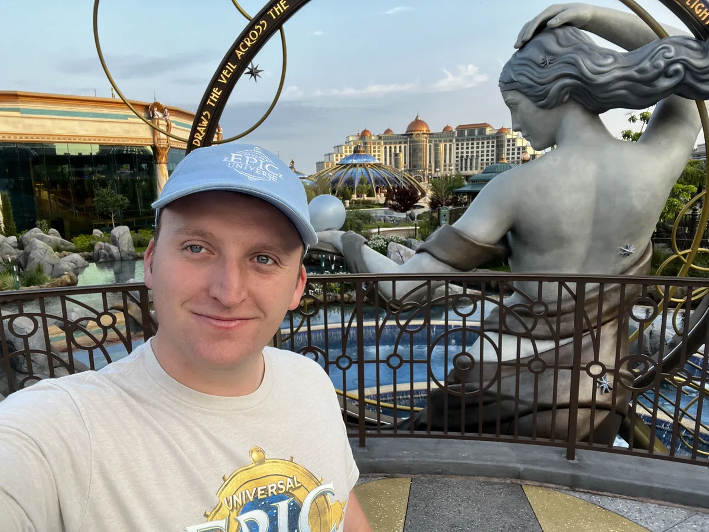

Alex Traynham · Orlando, Florida
Digital content, marketing, and brand work in entertainment, hospitality, and media.
I’m a UCF Entertainment Management graduate, a YouTube creator since 2014, and an Opening Trainer at Epic Universe. I bring hands-on experience making content, opening attractions, and helping people understand something new.

Selected projects
A closer look at my work.
-

AtrayGaming, my YouTube channel
300+ videos published since 2014, as of October 2026: gaming, music covers, and live streams, with the decisions behind the work examined in the case study.
Read the case study -

One Group, Different Speeds
A planning concept for a YouTube video about friends with different ride preferences at Celestial Park, with a brief, script, storyboard, thumbnail studies, and a measurement plan.
Read the case study -

Guest experience research
A UCF research project on how theme park content shapes what guests expect before they arrive, and what happens when the visit does not match.
Read the case study
Experience behind the work
Creating, explaining, and learning.
Independent content creation taught me to take an idea through to a finished piece. Working in attractions taught me to notice what people need to understand, then find a clear way to explain it.
My experienceLet’s talk about what comes next.
I’m building toward digital content, marketing, and brand work. Starting UCF’s Evening MBA in Spring 2027.
Get in touch